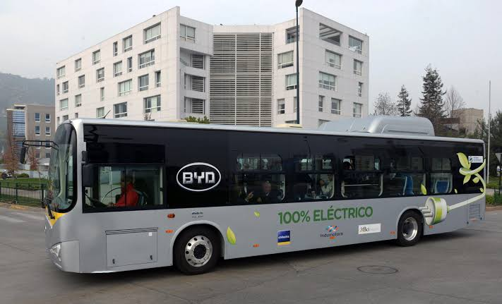
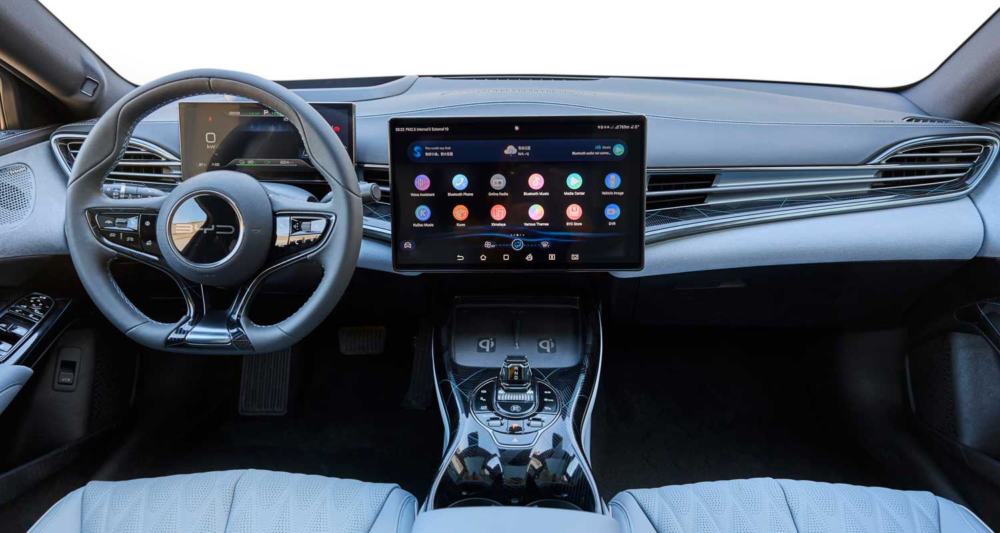

El BYD K9 UD es un autobús 100 % eléctrico diseñado para el transporte público urbano. Desarrollado con tecnología de vanguardia, ofrece una operación silenciosa, eficiente y libre de emisiones contaminantes, contribuyendo a una movilidad más sostenible en las ciudades.
Equipado con la reconocida Blade Battery de BYD, el K9 UD proporciona una gran autonomía, alta seguridad y bajos costos de operación y mantenimiento. Además, su amplio espacio interior, accesibilidad para personas con movilidad reducida y sistemas de seguridad avanzados garantizan un viaje cómodo y seguro para los pasajeros.
Gracias a su tecnología innovadora, eficiencia energética y compromiso con el cuidado del medio ambiente, el BYD K9 UD es una solución ideal para modernizar el transporte urbano y ofrecer un servicio de mayor calidad.

S/1,450,000